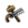
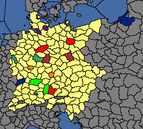
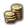
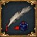

|
|
| 奧地利
|
| 政府等級
|
公國
|
| 主流文化
|
奧地利（日耳曼）
|
| 首都
|
維也納 [134]
|
| 政體
|
奧地利大公國
|
| 國教
|
天主教
|
| 科技組
|
西歐科技組
|
|
|
| 奧地利 / 施蒂里亞的理念
|
| ----
|
|
|
| 傳統
|
+10% 陸軍士氣
+30% 關係改善
|
| 野心
|
+50% 獲得新繼承人概率
|
| 理念
|
|
帝國雄心
- +10% 帝國權威增長
- −15% 外交吞併花費
 軍事前線
- −10% 要塞維護費
- +15% 國家要塞駐軍增長
富格爾銀行
- +0.05 每年通貨膨脹減量
- −0.5 年利率
哈布斯堡霸權
- +2 外交聲譽
歸還詔書
- +2% 傳教強度
奧地利宮廷
- +1 外交關係
御前軍事委員會
- +30% 補員速度
- +5% 訓練度
|
|
|
A.E.I.O.U.
到1438年時，哈布斯堡家族已經可以觸及一些中歐最顯赫的權位。「高尚者」阿爾布雷希特可以宣稱的已經不止奧地利公國，還有匈牙利王國、波希米亞王國，以及「德意志當選國王」的尊貴稱號，這是為那些將要成為神聖羅馬帝國皇帝的人而保留的。然而造化弄人，阿爾布雷希特在1439 年與土耳其人的戰爭中陣亡，只留下他尚未出生的「遺腹子」拉迪斯勞斯作他的繼承人。
新生的拉迪斯勞斯將會在討回屬於他的遺產的路上歷盡磨難；在一場短暫的內戰後，波蘭國王瓦迪斯瓦夫已經奪走了匈牙利的王位。另一方面，波希米亞王國在繼承問題上仍然意見不一。數十年的宗教內戰讓國家滿目瘡痍，天主教異端——胡斯派的掌權貴族仍然主宰着一些地區。
拉迪斯勞斯的地位只在哈布斯堡王朝的主場——奧地利得到接受；然而當下是他的堂叔腓特烈作為攝政王施政。
在瓦爾納的完敗令匈牙利的王位再度無主，哈布斯堡的支持者仍抱有拉迪斯勞斯重新宣稱匈牙利王位的希望。曾經廢黜幼王的權力集團似乎不願再度立他為王，他們或許會讓精力充沛的攝政王匈雅提·亞諾什帶領他們。
哈布斯堡家族登上皇位的夢想並沒有隨着阿爾布雷希特的逝去而破滅。他死後，神聖羅馬帝國推舉奧地利的攝政王腓特烈作為帝國新的領導者。作為他的支系中第一個坐上帝位的成員，腓特烈為未來的哈布斯堡留下了一份傳承。若是他們選擇貫徹他精心的外交聯姻、耐心計劃繼承的政策，哈布斯堡家族或許會鑄就一個歐洲諸王的家族都未曾見識過的強權地位。統治帝國的重任本身也是巨大的挑戰。一位皇帝必須保持帝國內的和平，清除諸如近來的胡斯派之流的異端，並在不斷推進的鄂圖曼——一支已經令哈布斯堡損失一位國王的強權——的大軍前不惜一切代價守護基督教。
| 「 |
"While other nations do battle, you lucky Austria, you wed."
—— Maria Theresa (1717-1780)
|
」 |
奧地利（英文：Austria）是遊戲開始時的 神聖羅馬帝國皇帝。它位於中歐地區，北鄰 波希米亞，西接德意志諸國，東邊是 匈牙利和 采列，南面則與 威尼斯和 特倫特接壤。
奧地利相當適合那些希望遊玩哈布斯堡家族和體驗神聖羅馬帝國皇帝的玩家。神聖羅馬帝國皇帝擔負着抵抗外來侵略者、保衛帝國領土主權完整的使命，同時也有維護帝國秩序、維持宗教統一的任務。通過拉攏選帝侯、壟斷皇位，奧地利可統領諸侯、維護 帝國權威、施行帝國改革，最終有望一統帝國成為青史留名的世界強權。
歷史背景
關於歷史上哈布斯堡家族領地在遊戲開局時間的分裂狀況，可以參考如上條目。
任務
DLC 皇帝開啟時，奧地利擁有整個遊戲中最豪華的任務樹（多達45項），主要內容包括神聖羅馬帝國內事務，統合哈布斯堡君主國歷史上的領土，擊敗宿敵，並最終君臨歐洲。
皇帝未開啟時，奧地利僅能體驗小部分任務。
奧地利特殊政體
奧地利有兩種獨特的 1 級政府改革（「權力結構」）。開局時，奧地利的政府體制為「奧地利大公國」；在完成「多元文化帝國」任務後，可以觸發事件「改革奧地利帝國政府？」，在其中選擇是否改為「奧地利帝國君主制」。
奧地利大公國
「奧地利大公國」是 奧地利專屬的政體，且僅在1444標準開局時擁有，在降低屬國獨立傾向上給予了一定的增益。
該政府改革提供以下增益：
- −33% 附屬國發展度帶來的獨立傾向
- +5% 貴族階層影響力
- +5% 馬拉塔階層影響力
- +5% 拉傑普特階層影響力
奧地利帝國君主制
「奧地利帝國君主制」是一項僅有 奧地利可用的 1 級政府改革，可以通過完成任務「多元文化帝國」獲得，可以撤銷，在外交和文化上給予了大量加成。
該政府改革提供以下增益：
- +2 可接納文化
- −2 全國叛亂
- +2 君主外交能力（未來）
- −33% 接納文化花費
事件
奧地利的事件主要圍繞奧地利與 波希米亞的關係、與 匈牙利的不穩定狀態、莫扎特和梅特涅奇等時代名流以及 意大利戰爭。
僅僅是她的存在就足以顛覆歐洲的權力平衡——即便奧地利與神聖羅馬帝國的盟約和奧地利法律的不確定性都告訴她此舉並不明智，她仍宣稱着奧地利的皇位。她擁有着強大的力量，足以讓許多人相信她能夠抵擋來自強大好戰的普魯士的任何襲擊。雖然在其他方面實行漸進式改革，她聲稱她將會在帝國內壓迫少數宗教，因為任何集團都可能讓奧地利四分五裂。為了與我們強大的鄰居競爭，她將會向貴族徵稅，改進奧地利的教育並改革軍隊。她還希望禁止獵巫。
決議
奧地利是一個可重建國家。當它不復存在時，任何以奧地利文化為主流文化的國家都可以重建奧地利。[1]
另外，奧地利也可以成立 德意志。
來自維也納的哈布斯堡家族曾經掌握着神聖羅馬帝國的絕對領導權，其核心領地是奧地利大公國。但是現在他們的帝國早已湮滅為塵埃，收回奧地利並奪回帝國權力的機會落到了我們身上。
|
|
|
潛在需求
- 使用一般或歷史國家
- 從未是結局標籤國家
- 從未是德意志區域性國家
- 不是：
- 國家 flag formed_austria_flag 已設置
- 至少滿足之一：
- 主流文化是奧地利
- 不是：
- 至少滿足之一：
|
接受
- 不是：
- 未處於攝政會議中
- (THIS) 是獨立國家或朝貢國
- 不是草原游牧
- 未處於戰爭中
- 擁有省份維也納
- 擁有至少 6 個位於歐洲的、文化為奧地利的省份
|
|
效果
- 國家成為 奧地利
- 獲得 10 威望
- 奧地利本部：
- 內奧地利：
- 省份因塔爾：
- 省份埃奇塔爾：
- 省份利恩茨：
- 刷新非通用任務，獲得新任務
- 設置國家 flag formed_austria_flag
- 如果：
|
AI決議因子：
我們的國家儘管缺少一個強大的中央政府，但仍然在蓬勃發展。由德意志北部數百個城鎮組成的漢薩同盟對我國的繁榮起了至關重要的作用。知識逐步豐富，再加上海路與陸路的貿易，都幫助了我國迅猛發展，將我國轉變成了一個富裕的製造業中心。
|
|
|
潛在需求
- 使用一般或歷史國家
- 從未是結局標籤國家
- 不是：
- 國家 flag formed_germany_flag 已設置
- 至少滿足之一：
- 至少滿足之一：
- 不是：
- 不是：
- 不是：
- 不是：
- 至少滿足之一：
- 由玩家控制
- 全部：
- 由AI控制
- 擁有至少15個非殖民地省份
- 行政科技至少為 20 級
- 文化屬於日耳曼文化組
- 不是：
- 不是殖民領
- 至少滿足之一：
- 至少滿足之一：
- 國家 flag teu_can_form_germany 已設置
- 不是：
|
接受
- 行政科技至少為 20 級
- 是獨立國家或是朝貢國
- 不是草原游牧
- 未處於戰爭中
- 擁有核心省份柏林
- 擁有核心省份不倫瑞克
- 擁有核心省份慕尼黑
- 至少滿足之一：
- 至少滿足之一：
- 至少滿足之一：
- 至少滿足之一：
- 至少滿足之一：
- 至少滿足之一：
- 在北德意志區域、南德意志區域擁有共計至少 50 個核心省份
|
|
效果
- 國家成為 德意志
- 如果：
- 否則：
- 神聖羅馬帝國皇帝
- 獲得對 我國的觀點修正 「脫離神聖羅馬帝國」 （ −150 觀點 / +1 年度衰減）
- 省份離開神聖羅馬帝國
- 神聖羅馬帝國皇帝
- 觸發國家事件 「[From.GetName]脫離帝國」
- 德意志:
- 所有省份位於北德意志地區：
- 所有省份位於南德意志地區：
- 獲得國家修正 「加強中央集權」 持續 20 年，並給予以下效果：
- −0.05 每月自治度變化
 +1 全國叛亂 +1 全國叛亂
- 獲得 25 威望
- 設置國家 flag formed_germany_flag
- 如果：
- 刷新任務為德意志任務
|
AI權重：
- 基礎權重：100
- 基礎權重 * 0 如果下列屬實：
- 基礎權重 * 0 如果下列屬實：
 成立德意志，需要擁有所有正紅色省份；
需要擁有圖中（除淺黃色外）每種其它顏色的省份中各一個，
並在北德意志、南德意志區域（淺黃色）總共擁有至少 50 個核心省份。
成立德意志後獲得所有彩色省份（除柯尼斯堡外）的永久宣稱。
策略
奧地利的遊戲體驗與其他國家具有相當多的不同，因此扮演奧地利會有非常獨特的體驗。奧地利需要通過壟斷神聖羅馬皇帝的頭銜來維持其大陸強權的地位，這決定了帝國內部的外交攻勢以及設法提高帝國權威是其策略的主軸。值得慶幸的是，奧地利的國家理念是遊戲中最強的外交系理念。維持盟友關係同樣是奧地利遊玩策略的關鍵，因為幾乎所有奧地利的主要宿敵（特別是 法蘭西和 鄂圖曼）都有着卓越的軍事系理念。
奧地利有機會獲得許多重建聯合統治的宣戰藉口與將本國君主家族對外輸出，是非常適合玩聯統的國家。通過任務樹可以獲得對 波希米亞、 匈牙利、 波蘭、 米蘭、 那不勒斯等國的「重建聯合統治」戰爭藉口（如果目標國家不能被聯統，則改為獲得對應地區的宣稱）。除此之外，身為皇帝的 奧地利擁有更多的外交官以及外交關係限額。也因為如此，它可以擁有更多的聯姻國家，而且開局的高 威望有利於使和你聯姻的國家和你同一王朝，或者直接建立聯統，甚至完全繼承。 匈牙利和奧地利是歷史盟友，很容易在開局就得到一個友好而強大的盟友。
值得注意的是，在經濟層面上， 奧地利相較而言是個貿易弱勢國，因為其貿易本埠維也納是個內陸貿易節點。但是 奧地利也有着獨有的優勢：掌握着歐洲罕有的幾個 金礦之一（蒂羅爾銀礦），並且因為開局就是皇帝，享有着12個自由市帶來的年度  稅收獎勵。金礦帶來的通脹可以通過以下四種辦法來控制：經濟理念組、奧地利的第三國家理念、僱傭減通脹的顧問或者消耗教廷影響力點數來選取寬恕高利貸法案。實際上並不需要急於控制通脹，這一數值的影響很小。
雖然 奧地利初始的貿易本埠並不出色，但是 奧地利距離兩大貿易黑洞，威尼斯和熱那亞非常近， 奧地利可以考慮控制北意大利並將本埠遷至此處以獲得更高的貿易收入。
奧地利是最方便成立 神聖羅馬帝國的國家，因其開局即為皇帝，擁有數個外交與神羅系國家理念，以及足以迫使其他神羅諸侯服從自己意願的相對實力。以下的步驟能幫助玩家以較快的步伐重建帝國。
在1.30版本之後，跟着 奧地利的任務樹基本就可以成立 神聖羅馬帝國。同時一個好的開局也能決定很多：如果 勃艮第並沒有宿敵玩家並且絕嗣，可以開局就和他聯盟，以便繼承勃艮第；運氣好的話 匈牙利會自動建立聯合統治關係。這時你就有足夠實力根據任務樹武力聯統 波希米亞。此後密切關注 米蘭的動向，如果米蘭絕嗣你也可以獲取聯合統治的戰爭藉口。 西班牙（或卡斯蒂利亞）是一個好的盟友，並且可能通過事件產生哈布斯堡繼承人，可以先和它結盟、聯姻方便日後宣稱王位。這些操作完成了以後，按照任務樹的要求，你在波希米亞吞併西里西亞以後，可以選擇在實力允許的條件下 波蘭，奪取波蘭地區。當吃掉的土地達到要求之後，可以獲得對 波蘭重建聯合統治的藉口。運氣好的話這一戰應該能獲得波蘭和立陶宛的王位（波蘭附庸了摩爾達維亞的話還會額外獲得摩爾達維亞）。在此之後全歐洲除了 法蘭西和鄂圖曼基本已經沒有能與你一戰的對手了，找機會削弱這兩個國家，並儘量迅速地積累帝國權威，為宗教改革時代做準備。
勃艮第並沒有宿敵玩家並且絕嗣，可以開局就和他聯盟，以便繼承勃艮第；運氣好的話 匈牙利會自動建立聯合統治關係。這時你就有足夠實力根據任務樹武力聯統 波希米亞。此後密切關注 米蘭的動向，如果米蘭絕嗣你也可以獲取聯合統治的戰爭藉口。 西班牙（或卡斯蒂利亞）是一個好的盟友，並且可能通過事件產生哈布斯堡繼承人，可以先和它結盟、聯姻方便日後宣稱王位。這些操作完成了以後，按照任務樹的要求，你在波希米亞吞併西里西亞以後，可以選擇在實力允許的條件下 波蘭，奪取波蘭地區。當吃掉的土地達到要求之後，可以獲得對 波蘭重建聯合統治的藉口。運氣好的話這一戰應該能獲得波蘭和立陶宛的王位（波蘭附庸了摩爾達維亞的話還會額外獲得摩爾達維亞）。在此之後全歐洲除了 法蘭西和鄂圖曼基本已經沒有能與你一戰的對手了，找機會削弱這兩個國家，並儘量迅速地積累帝國權威，為宗教改革時代做準備。
羈縻意大利（rein in Italy）的決議最好也能做到，順利的話 米蘭已經被你控制，而其他國家可以通過結盟或發展關係至+150、或者與其的戰爭中打敗它來羈縻統治。注意只需要與對方達成有利於你的和平協議即可，所以一場戰鬥儘量跟所有交戰國單獨議和（不需要割地，只需要獲勝即可），剩下的兩三個國家可以臨時結盟或者改善關係來完成這個決議。完成這個決議之後，「教宗國加入帝國」的事件也會發生，你的帝國權威應該能迅速積累。盡全力在宗教改革時代到來之前完成前三個改革，這會允許你在宣戰其他帝國外國家、將它們納入帝國。在此期間， 勃艮第應該已經絕嗣並選擇了和你建立聯合統治。這時也會有帝國事變導致你和 法蘭西的戰爭，但是不用害怕，法國是進攻方，一般打不過你和盟友，所以你可以趁機削弱 法蘭西。
宗教改革時代很容易喪失帝國權威，不妨試試在外交理念點滿的情況下直接強行宣戰改革中心的宣戰，可以通過「強制轉換宗教」直接撲滅宗教改革中心（如果它在小國家的首都地區）。宗教戰爭到來之前，你最好迅速改革帝國，達成世襲制（或者永久性禁止復仇）的改革保證帝位。如果宗教戰爭不可避免，你可以爭取削弱法蘭西和鄂圖曼等潛在敵人，防止在宗教戰爭時因為他們加入對立陣營導致新教同盟過於強大。
匈牙利王冠
開局時奧地利和 匈牙利擁有同一位繼承人——馮•哈布斯堡家族的[遺腹子]拉迪斯勞斯，在他15歲（1455年）成年時，會出事件來決定是否讓其登上匈牙利的王位，如果匈牙利同意了，它將成為奧地利的一個被聯統國，如果匈牙利拒絕了，奧地利會獲得對匈牙利重建聯合統治的戰爭藉口。玩家可以通過讀檔來讓 匈牙利成為自己的聯統國，或者在1455年至1457年設法使匈牙利處於戰爭中，這一情況下遺腹子不會被其它繼承人取代，一旦他同時成為 奧地利和 匈牙利的君主，就能自動在兩國間建立聯合統治。
此外，任務樹也給予了對 匈牙利重建聯合統治的戰爭藉口，但對其開戰可能會失去「歷史盟友」的關係修正。
帝國權威
通常會影響每月 帝國權威變化的因素有：
- 更多的帝國成員，超過25名成員時，超過的每名成員 +0.004。
- 維持最多12個帝國自由市，每個自由市 +0.005。（開啟 DLC常識時）
- 帝國內部和平 +0.10。
- 異端諸侯，每個異端諸侯 -0.01，宗教和平後懲罰減半。
- 選帝侯是他國附庸或缺少選帝侯，每個選帝侯 -0.1 (選帝侯被聯合統治不會帶來帝國威望懲罰，但聯合統治會讓該選帝侯給予他們的宗主外的候選人 -50的投票懲罰)
- 被非帝國成員或非帝國成員附庸的帝國成員控制的帝國省份，每省 -0.005。
通過外交手段或戰爭讓新成員加入帝國、帝國事件的投票結果、皇帝連任等手段能一次性增加或減少帝國威望。
更多機制請參閱神聖羅馬帝國。
羈縻北意大利
在1.30版本之後，對北意大利的控制發生了較大改動，比起戰爭更強調通過外交手段來控制北意諸邦，且必須等待對應的帝國事件發生後才能執行決議「羈縻北意大利」。
當滿足以下要求之一時，一個首都位於北意大利的神羅國家會被認為「被皇帝控制」：
- 是皇帝的盟友或附庸(北意諸國常互為宿敵，應注意結盟帶來的他國好感度損失)
- 對皇帝的態度為友善且與皇帝關係足夠好(150點好感度)
- 在最近的戰爭中曾被皇帝擊敗（不需要對方是戰爭的盟主）
通過決議介面玩家能查看哪些國家尚未被控制。
在1490年之前，將發生一個帝國事變，讓皇帝決定是否放棄直接北意大利諸邦。如果皇帝選擇放棄，將扣除大量帝國威望，所有未被控制的北意國家將立即退出帝國；如果皇帝決定保持控制，則需要在1490年前控制所有北意神羅國家以完成決議「羈縻意大利」，這將使玩家獲得帝國威望獎勵，北意國家也不會再試圖脫離帝國。
成功控制了北意大利後， 教宗國可能會期望加入帝國；如果此時選帝侯席位空缺，教宗國也會自動成為一個選帝侯。但教宗國會在帝國改革「宣佈永久世襲」，或者帝國官方信仰不再為天主教後離開帝國，不過可以通過給教宗一個選帝侯名額來避免。
勃艮第領土
勃艮第通過聯合統治控制着低地的帝國領土，自己也直接統治着四個帝國省份，造成大量權威損失。
勃艮第應對策略的要點在於讓所有的帝國省份回歸帝國，以及防止 法蘭西和 英格蘭獲得這些省份。攻略可以通過偽造宣稱或征服宿敵任務從蘇德高方向開展。一般肢解 勃艮第的方法包括：
- 通過割取省份弗朗什孔泰和第戎，迫使 勃艮第遷都。 勃艮第一旦遷都到帝國省份，
 布拉班特和
布拉班特和  荷蘭也就自然而然地回歸帝國懷抱了。（此法成功率將在皮卡第和阿圖瓦落入他國手中時大大增加： 法蘭西擁有征服這些省份的任務， 英格蘭則通常都會偽造這些省份的聲稱。）
荷蘭也就自然而然地回歸帝國懷抱了。（此法成功率將在皮卡第和阿圖瓦落入他國手中時大大增加： 法蘭西擁有征服這些省份的任務， 英格蘭則通常都會偽造這些省份的聲稱。）
- 通過至少三場戰爭，解放 埃諾、 盧森堡，取消 荷蘭、 布拉班特的附屬關係，宣稱弗朗什孔泰。
1.30後勃艮第繼承危機經過了改動，使玩家有了不通過戰爭手段來控制 勃艮第的可能，而且還有更大的權利決定勃艮第的未來。推薦玩家刷一個勃艮第不宿敵自己的開局以便與其結盟、聯姻。
如果 勃艮第開局時的繼承人查理在去世後沒有繼承人、繼承人宣稱弱或繼承人為女性，事件勃艮第繼承危機將發生，勃艮第將有可能通過事件成為帝國皇帝的一個被聯統國，這在 勃艮第與皇帝關係良好時是很可能發生的。之後，新一輪的帝國事變將開始，以決定勃艮第領土的命運，推薦玩家選擇完全控制所有領土，雖然這會導致 法蘭西向皇帝宣戰，但作為防禦方的皇帝應該能輕鬆擊敗敵人。
如果 勃艮第安然存在到了1500年，同樣可能發生一個事件來讓勃艮第有機會成為神聖羅馬帝國的成員，在勃艮第與皇帝關係良好或實力弱小時它將更有可能選擇加入帝國。
其他附屬他國的帝國成員
開局時 普羅旺斯是 洛林（梅斯+洛林）的宗主國，同時控制帝國省份巴羅瓦。我們可以通過從巴羅瓦中釋放 巴爾獲得新的帝國諸侯。 荷爾斯泰因也是帝國的一部分，但它是 丹麥的附庸。（可嘗試在聯統匈牙利、波西米亞、波蘭、立陶宛之後，進攻丹麥，解放 荷爾斯泰因）
非帝國成員控制的帝國領土
條頓騎士團開局時控制着 勃蘭登堡的諾伊馬克等兩個核心省份；但一般來說，這兩個省份很快就會經由事件，被勃蘭登堡回購；假如不賣勃蘭登堡往往也會武裝強買。布雷西亞等帝國省份則屬於 威尼斯，它們是米蘭的核心省份，打下來之後可以考慮還給 米蘭（皇帝還能通過事件和任務樹獲得對米蘭的聯統CB）。威尼斯在前期通常是一個很好的擴張對象，對於威尼斯的其它省份，奧地利直接加入帝國就可以了。
當第一個帝國改革被通過後，皇帝將獲得「奪回帝國領土」CB去征討上述省份。
宗教改革與三十年戰爭
身為神聖羅馬帝國皇帝，宗教改革 是一個難以避免的能對帝國造成災難的事件。諸侯們會因為它們的領地被傳教而改變國教, 同時也會因為它們的改教而降低 帝國威望。同時, 任何一個玩家的領土一旦被改教 (或者通過戰爭得到被改教的領土) ，該地將獲得10年的「宗教熱情」修正而無法被傳教，即使沒有這一修正，前期傳教力量不足時也無法快速改變省份的宗教。
更糟糕的是，在1550年後，如果有任一選帝侯改信了新教（無論這位選帝侯與皇帝關係如何），將有可能觸發事件「福音派聯盟」，這將是對皇帝權力的巨大挑戰，有可能演變為一場全歐洲的混戰，皇帝如果在宗教同盟戰爭中慘敗，將面臨失去皇位的威脅，即使獲得了勝利，好處也不太大。
在福音派聯盟成立後，皇帝將不能再推行新的帝國改革，所有首都位於歐洲的國家都能選擇加入宗教聯盟中的某一方，加入哪個陣營不僅取決於該國的宗教信仰，還取決於聯盟中宿敵與盟友的數量，因此 法蘭西信仰天主教卻加入新教陣營是很常見的情況。
宗教聯盟的宣戰主動權在於新教一方，皇帝無法主動以宗教聯盟的戰爭藉口向新教方開戰，而且也無法通過個別戰爭來削弱新教聯盟（皇帝進攻任一新教聯盟成員時所有新教聯盟成員都會加入防禦方）。
策略一、避免宗教戰爭
改革迅速的玩家有機會在福音派聯盟前通過「宣佈實行世襲制」，這將達成宗教和平並避免三十年戰爭。
如果不能迅速改革，則最好避免帝國成員的大規模改信。由於在確立官方信仰前無法通過外交手段讓帝國成員改信（除非它是皇帝附庸），所以只能訴諸戰爭，如果無法直接進攻異端國家，也可以攻擊它們的盟友，無理由強宣也完全值得考慮（但要注意強宣產生的侵略擴張）。皇帝應將目標聚焦於消滅新教和改革宗的改革中心。每種改革中心將出現三個，其中後兩個改革中心不會給所在省份添加宗教狂熱修正，這意味着它們可以通過派遣傳教士來改教，只要傳教力量足夠高。另外，當通過戰爭條款、外交手段、附屬國互動等方式對某國強迫改信時，該國首都將會被強制轉換信仰，但這似乎對第一個改革中心無效。
如果一個國家境內的異端省份佔比實在太多，它可能會在未來爆發宗教叛軍而再次改回異教。
出現異教選帝侯會相當糟糕，想避免宗教戰爭的最終選項是剝奪選帝侯資格。這樣會帶來10點帝國權威懲罰和與其他選帝侯的關係懲罰，但如果成功的話將允許皇帝選一個新的（最好是忠於皇帝的）選帝侯。前選帝侯可以被正常改宗。
改革中心可能會出現在玩家不能或者不應有所動作的地方。比如在 丹麥、 西班牙或 波蘭，這些改革中心會很難去除，但同時其對神聖羅馬帝國省份的轉化應當比較稀少。不過，奪取上述中心或者強迫他們改宗也可以提上未來日程。
策略二、宗教戰爭之後
如果玩家由於種種原因導致福音派聯盟成立，並有幸得以凱旋（贏得宗教戰爭或靠着強大實力威懾着新教聯盟使之不敢宣戰），會發現自己的帝國已經變得千瘡百孔，彌合帝國成員之間的宗教分歧應當是玩家的首要目標。
最容易的方法是利用「帝國外交」中的「強制宗教統一」選項，若它們親近皇帝或者皇帝擁有足夠的外交聲譽，它們就會改教成帝國的官方信仰，這將扣除一點 帝國威望並降低皇帝與所有非官方信仰成員國之間的關係。此時，其首都會立即轉教，並會移除當地的改革中心。
但是這個方法也不總是奏效。皇帝在帝國內的敵人以及大諸侯會拒絕改宗要求。因此，第二方法是與之開戰，如果很難得到一個宣戰理由的話，也可以攻擊他們的同盟。對於一個異端國家來說，戰爭選項之一就是皈依，隨異端宗教省份的數量增加需要消耗的戰爭分數。強迫停戰成功後的效果與上面相同：首都立即改宗並移除改革中心。有時候急需去除一個改革中心，打一場無理由的戰爭也是值得的。
如果國家太大以至於無法通過停戰協議改宗，可以選擇割讓已經改宗的省份，特別是有 改革中心的省份，並期待下一場戰爭中強令改宗。這可能會比較痛苦，因為改宗的省份會顯著降低宗教統一而且有很高的叛亂度，加上宗教狂熱會在第一次改宗之後的十年內阻止再次傳教。
如果玩家自己希望轉換到新教，首先需要注意的是這條路很艱難。如同玩家堅持天主教而其他神聖羅馬帝國諸侯都皈依新教一樣，沒人會喜歡玩家而且帝國權威也會一落千丈。更糟糕的是，直到成立宗教同盟為止，不論選帝侯們多喜歡，一個新教的諸侯也是不會被選為皇帝的。重新奪取帝國寶座需要成立新教同盟，並贏得一場對抗天主教同盟所有盟友的戰爭。如果戰爭條款中通過了「宗教霸權」，神聖羅馬帝國的官方信仰會轉變為新教，而皇帝也必須是新教徒，並且不允許天主教國家參選。新教信仰對於奧地利來說，既困難又沒有多少好處，除非玩家喜歡挑戰，或者希望體驗一場更精彩的遊戲，不然不推薦此路線。
發展帝國
遊玩 奧地利的目標很有可能是統一神聖羅馬帝國，而最終改革對諸侯的吞不會消耗外交點數。發展 神聖羅馬帝國的一個簡單方法是復興邊境國家，讓其擁有帝國之外的核心。 條頓騎士團經常被 波蘭/ 波蘭立陶宛聯邦吞併。 它可以很容易地從 勃蘭登堡內解放出來，通過一場戰爭，將他釋放出來，然後對 波蘭使用帝國解放的宣戰理由，以收回 普魯士文化的省份和 條頓騎士團。
同樣， 勃艮第的首都往往是由 法蘭西的推動從而進入 神聖羅馬帝國的省份，使其成為帝國的一員。 因此，帝國解放也可以用來收回 勃艮第在帝國內的領土。
由於帝國外圍的國家通常受到強大的 法蘭西、 波蘭立陶宛聯邦或 斯堪的納維亞的威脅，如果他們與皇帝有良好的關係，他們通常會在帝國中佔領更多的省份。 這使他們成為好盟友或附庸，如果皇帝強大，並有足夠的帝國控制權力，便足以接管這些強大的鄰居。
撤銷特權與統一帝國
通過集權線改革的「撤銷特權」後皇帝將獲得數十個獨立傾向中不計附庸相對實力的附庸國，這將使玩家成為遊戲中最強大的政權：經濟上，對附庸國「啟用轉移貿易」能帶來極高的經濟收入；軍事上，巨大的附庸軍團們能橫掃歐洲乃至世界上的一切國家；內政上，通過將新征服的土地分給不同的附庸，玩家能處理極高的過度擴張。需要注意的是，反對這項改革的諸侯將就此退出帝國，同時皇帝獲得其領土全部宣稱，並且沒有停戰條約，皇帝可以迅速征服它們。
撤銷特權後加入神羅的國家（無論是武力併入還是自行加入）不作為皇帝的附庸，與其進行外交互動會佔用外交關係。但假如武力或外交附庸之，其效果與將與其他神羅附庸國相同。利用這一特性可以節省行政容量，例如佔領涅瓦或維堡後造核加入神羅，再外交釋放附庸諾夫哥羅德或芬蘭，就能獲得了在帝國外有大量核心領土的神羅附庸（不佔用外交關係）。由於通往東歐的道路被 波蘭立陶宛聯邦阻擋，其被奧地利聯統時無法加入帝國，因此很有必要在普魯士—庫爾蘭地區創造一條通路，讓神羅能夠從梅梅爾通向北歐和東歐。另外，在聯統繼承或吞併外國後，可以在省份加入神羅後拆成多個附庸，可以省出行政容量對印度和中國進行殖民開發，例如神羅化伊比利亞、意大利、法蘭西和波蘭、俄羅斯。必須確保釋放國（或者至少潛在首都）在神羅境內，以此獲得帝國附庸的益處。
需要注意的是，皇帝在神羅外的附庸國計算獨立傾向時包括全體神羅附庸，而且阻斷了神羅擴張的道路，因此除非必要很不划算。另外，一旦撤銷特權後的皇帝的外交關係不滿（奧地利尤為常見），大量作為附庸國的諸侯將紛涌而至請求王室聯姻，儘管通過之不佔用外交關係，但會造成正統性損失。這說明AI的外交請求權重受接收國外交關係容量影響。
理念組
外交或者影響理念是第一組理念的首選項，這兩組理念對壟斷神羅皇位非常重要。這兩組理念都具有 外交關係 +1 和 外交聲譽 +2（將帶來選舉意願度 +10 的修正和每點 +5 的帝國改革贊同度）的重要理念。影響理念能加快擴張，因為它能降低外交合併花費（ -25%），同時能降低屬國獨立傾向（ -15%）。外交理念則能提供更多的良性事件（包括一個能增加 +5帝國權威的事件），也能更好地提高關係（ +25%），以及代價更低的終止王室聯姻（免去 -1 穩定度而僅僅 -1 威望），在根除宗教中心時，外交理念組也能降低無理由強宣帶來的穩定度和侵略擴張懲罰。
進攻或者防守理念都有助於維持奧地利的陸軍力量，以制止神羅內外的敵意侵略。進攻理念可能更有用，因為奧地利將需要在帝國內部進行眾多的小型復國戰爭，而工兵軍團理念（ +20%）能降低圍城時間，同時大陸軍主義理念 （ +20%）能提供更高的陸軍上限以對抗法蘭西、鄂圖曼和波蘭。
宗教或人文理念相當適合作為第二、三組理念來對抗宗教改革帶來的異端浪潮。當皇帝希望保持帝國的天主教正統，並將 新教/ 改革宗諸侯轉化回 天主教時，宗教理念是個強力的選項。相反，假如宗教改革始於鄰國甚至始於 奧地利時，能規避宗教混亂災難的人文理念將變得更必要。當然，你也可以選擇每月消費 -1 君主點數來獲取宗教理念-進攻理念政策（反異端法案）所帶來的強力獎勵（ +20% 宗教統一， +3% 異端傳教力量）。
成就

The pen is mightier than the sword 作為奧地利，同時擁有三個聯統國
|
The Ostenders 奧斯坦德公司 作為奧地利，在西孟加拉地區建立貿易公司並進行地區投資和軍政投資。
|
|
|
The Zoro-Austrians 祆地利 以奧地利開局，轉化為祆教並完成波斯的祆教任務樹。
|
- ↑ 在1.30版本之前， 施蒂里亞是唯一可以重建奧地利的國家。